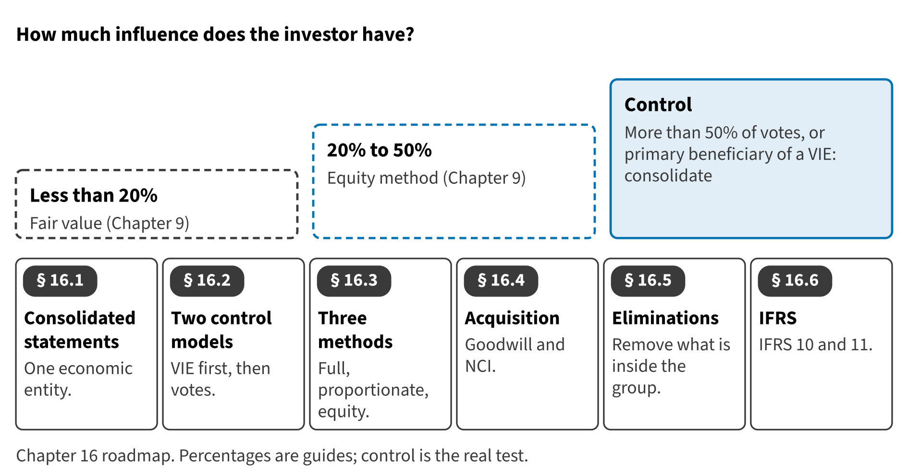

Part IV · Groups, IFRS contrasts and integrated reporting · Chapter 16
Consolidated Financial Statements
القوائم المالية الموحدة
In Chapter 9, Orontes held 30% of Jordan Glass and used the equity method. Suppose that on January 1, 2027, Orontes buys 80% of Levant Distribution LLC, a food distributor in Jordan and Lebanon. Now Orontes controls another company, and it must present the two companies as one.

Start here
Then
What this chapter is tested on
| LOS | Official statement (ICMA, 2024) | In plain words | Depth here |
|---|---|---|---|
| A.1.h | define consolidated financial statements | Define consolidated financial statements and measure goodwill and noncontrolling interest at acquisition. | Full treatment |
| A.1.i | define the two types of consolidation models: variable interest entity model and voting interest model | Distinguish the variable interest entity model from the voting interest model. | Full treatment |
| A.1.j | demonstrate an understanding of the three types of consolidation accounting: full consolidation, proportionate consolidation, and equity consolidation | Explain when full consolidation, proportionate consolidation and the equity method apply. | Full treatment |
| A.1.k | demonstrate an understanding of intracompany balances and transactions that should be eliminated in consolidation | Identify the intercompany balances and transactions to eliminate. | Full treatment |
| A.2.ff | identify and describe the following differences between U.S. GAAP and IFRS: (i) expense recognition, with respect to share-based payments and employee benefits; (ii) intangible assets, with respect to development costs and revaluation; (iii) inventories, with respect to costing methods, valuation, and write-downs (e.g., LIFO); (iv) leases, with respect to lessee operating and finance leases; (v) long-lived assets, with respect to revaluation, depreciation, and capitalization of borrowing costs; and (vi) impairment of assets, with respect to determination, calculation, and reversal of loss | Contrast ASC 810 with IFRS 10 and IFRS 11. | Preview (full in Chapter 17) |
The official statements are quoted from the ICMA Learning Outcome Statements (effective September 1, 2024). The plain-words column restates them in simpler English. The exam may test any outcome up to Level C.
What you already know
IFRS readers know IFRS 10: one control model, and a choice between full and partial goodwill. U.S. GAAP uses two control models and allows only full goodwill. Many exam traps come from these two differences.
The 8 key terms
Every scene has Check Answers and Try Again. Try Again reshuffles rather than revealing. When you are wrong, the first thing you read is the reason for the option you chose, taken from the book's own explanations. Progress is saved in this browser.